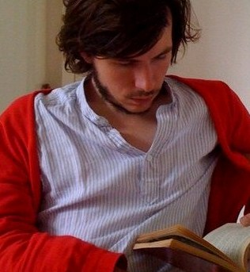

The winner of The Green Carnation Prize 2010 was only announced last week yet already ‘the green team’ have started making plans for an even bigger and better year for the prize next year. First on the agenda is the judging panel for 2011 which we can confirm includes some familiar faces and some new…
Simon Savidge, Chair of the Judges 2011
{kind=link}
Simon was born in the Peak District in 1982. He is London and Books Editor of Bent Magazine. After several years lost in the wilderness not reading he is a fully reformed book lover and writes the book blog ‘Savidge Reads’. He splits his time between Manchester and London which means lots of space for lots of shelves overflowing with books. He is thrilled to be chairing the award in its second year “I think it’s a fantastic mix of judges who all have one thing in common – a complete passion for books.”
Nick Campbell

{kind=link}
Stella Duffy
Stella Duffy has written twelve novels, forty short stories, and eight plays. Her latest novel, Theodora, was published by Virago in June 2010. The Room of Lost Things and State of Happiness were both longlisted for the Orange Prize. The Room of Lost Things won Stonewall Writer of the Year 2008, Theodora won Stonewall Writer of the Year in 2010. She has written forty short stories, including several for BBC Radio 4, and won the 2002 CWA Short Story Dagger for Martha Grace. Her first crime novel, Calendar Girl, was voted 5= of the top 100 novels in the international Big Gay Read. You can find her blog here.
{kind=link}
Paul Magrs
Paul Magrs was born in the North East of England in 1969. His first novel, ‘Marked For Life’ was published by Chatto and Windus in 1995. His most recent novels are ‘Enter Wildthyme’ (February 2011, Snowbooks) and ‘666 Charing Cross Road’ (October 2011, Headline.) He is also the author of the ‘Brenda and Effie Mysteries’ series of novels published by Headline. He taught the MA in Creative Writing at UEA for seven years, and then did the same at MMU in Manchester, where he lives with his partner, Jeremy. You can visit his blog here.
{kind=link}
Michelle Pauli
Michelle Pauli is a journalist and author. She is deputy editor of guardian.co.uk/books, the Guardian’s literary website, has written a weekly column about literary blogs for the paper’s Saturday Review and is currently working on a new online books project for guardian.co.uk. She has previously worked for the Times and the Independent and has written for a number of publications. You can find her website here and follow her on twitter here
{kind=link}